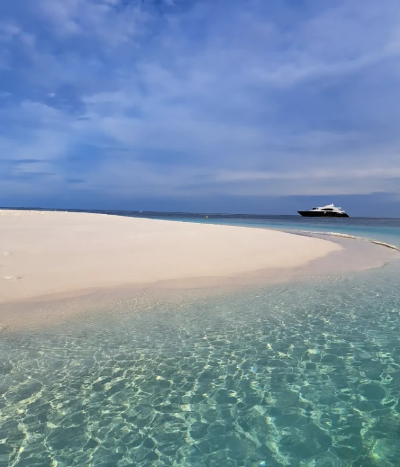

Home · Experiences · N°02
Great diving deserves great food. We create culinary experiences for boutique dive resorts, liveaboards and yachts: sharing tables, à la carte menus, set menus and romantic dinners for two after a day beneath the surface. Through menu development, pop-ups and collaborations, we bring Yunic to your destination. We share our recipes and techniques with your chefs, so they can continue bringing a taste of Yunic to your guests long after our visit.


The rhythm of the sea

For boutique dive resorts, liveaboards and yachts, we explore ideas with your chefs that complement your offering and give guests something new to enjoy.
A pop-up, a sharing table or a romantic dinner for two. A taste of Yunic, shaped around your resort and guests.
A special dinner or an unexpected sharing experience. Together with your chefs, we explore what could add something memorable to life on board.
A personal dining experience shaped around your guests and itinerary, created in conversation with your chef.
Have a destination in mind? Ask us about the possibility of bringing Yunic to your next diving trip.

Beachside & on board
We don’t believe the same concept works everywhere.
Before we say yes, we want to understand the place, the people behind it and what you want to create. If we feel Yunic can bring something meaningful to it, we take it from there.
That could be a pop-up, a collaboration, sharing dishes, an à la carte menu, set menus, romantic dinners for two or sharing recipes and techniques with your chefs. We agree a scope that suits your destination, facilities and guests.
There is no fixed formula. It starts with a conversation and seeing where it can go.